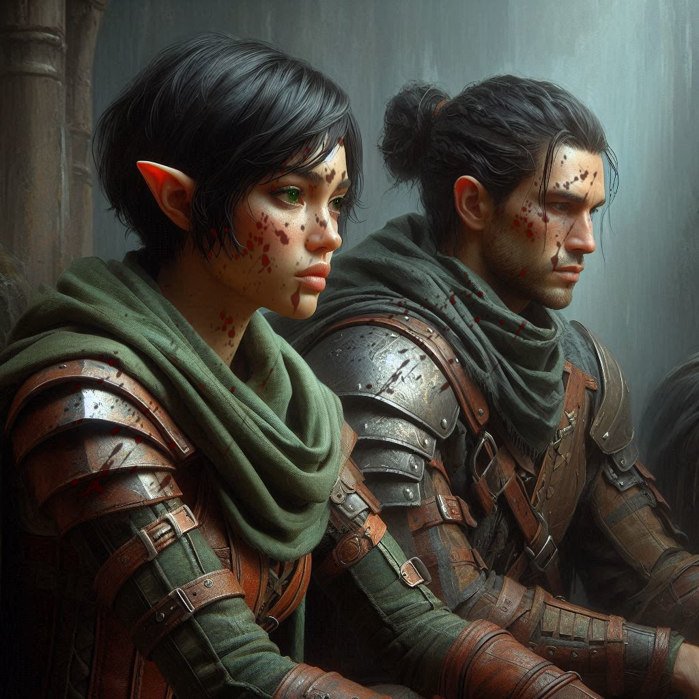

The Price of Victory
The acrid stench of blood and ash fills your lungs as you kneel beside Baider. His chest rises and falls in shallow, labored breaths, each one weaker than the last. The wound Varis left is jagged and cruel, the dark magic corrupting the flesh around it. You fumble with the healing potion in your pack, hands trembling as you uncork the vial.
"Stay with me," you plead, tilting the vial and pouring its golden liquid into the wound. It sizzles on contact, a faint light emanating as it attempts to knit his flesh together.
Baider winces, his eyes fluttering open. "Kira," he rasps, his voice barely audible over the cacophony of the battle. "You’re... stronger than this... than me."
"No," you choke, your voice cracking as tears blur your vision. "You’re going to make it. You have to."
His hand, heavy and calloused, reaches up to grip yours. "I’m proud of you... even if I didn’t say it enough."
The light from the potion fades, and with it, Baider’s strength. His grip slackens, his eyes unfocused as his breathing halts.
"Baider!" you scream, shaking him as if you could will him back. But he’s gone.
Grief grips you like a vice, but the sound of Varis’s triumphant laughter drags you back to the nightmare unfolding around you.
The obsidian portal erupts in a blinding flash of crimson light. The runes along its frame crackle and writhe as Yaldaboath emerges—a monstrous, otherworldly being of flame and shadow, its grotesque form dwarfing everything in the temple. Its eyes burn like twin suns, and its voice reverberates through the air like an earthquake.
"At last," the demon booms, its clawed hand stretching toward the altar.
Varis stands beneath the portal, arms raised in triumph. "Behold your god, mortals!" he declares, his voice ringing with manic glee.
Jorsh strides forward, his dark robes billowing as his hands crackle with arcane energy. "Varis," he growls, hurling a bolt of lightning that crashes against Varis’s magical shield. “I’m coming for you.”
The two sorcerers engage in a ferocious duel, their spells colliding in bursts of raw power that shake the temple to its core. Fire and lightning illuminate the chamber, casting long, flickering shadows.
You stagger to your feet, grief turning to fury as you grip your blades. The weight of Baider’s death drives you forward. With a battle cry, you charge Varis, but the dark elf prince barely glances your way before a blast of dark magic strikes you square in the chest.
Pain explodes through your body as you’re thrown backward, hitting the ground hard. Your blades clatter out of reach, and you can feel the burn of Varis’s magic searing into your flesh.
From your prone position, you watch as Elias steps into the fray, his bow drawn. His face is etched with determination as he looses arrow after arrow at Varis. Most of them are deflected by the sorcerer’s shield, but one finds its mark, burying itself deep in Varis’s shoulder.
Varis snarls, faltering for a moment, but the portal’s pull intensifies. Onyx, standing near its edge, suddenly stops struggling. His gaze locks on Yaldaboath, and a strange calm washes over him.
"No!" you cry, struggling to rise, but your body refuses to obey.
Onyx steps forward, his voice steady as he speaks words you can’t hear over the roar of the portal. Yaldaboath's massive hand reaches for him, and Onyx willingly offers himself, vanishing into the demon’s grasp.
For a moment, everything is still. Then, a blinding light erupts from within Yaldaboath. Onyx’s form reappears, glowing with divine energy, now fully transformed into the Archon Adonais. His presence expands within Yaldaboath, causing the demon’s form to crack and splinter.
"Run!" his voice echoes in your mind.
The explosion is deafening, a cataclysmic surge of light and energy that consumes Yaldaboath and sends shockwaves through the temple. The walls begin to crumble, massive chunks of stone falling around you.
Varis, wounded but not defeated, raises his hand one last time. A fireball begins to form, aimed directly at you. You see it too late to move, but a figure darts in front of you—Jorsh.
The fireball strikes him squarely in the chest, and his body convulses with the impact. He turns to you, his face pale but resolute. "Kira," he says, his voice soft. "I’m sorry... for everything."
Before you can respond, he collapses.
The temple groans as the portal to Hemlock Caverns begins to crumble. Through the chaos, a familiar figure emerges—Baider. His eyes glow with an otherworldly light, his form unsteady but resolute.
"Go!" he roars, his voice echoing with something beyond human. He grips the crumbling portal, holding it open with sheer force as Elias drags you to your feet.
"No, Baider!" you cry, reaching for him, but Elias pulls you back. "We have to go!"
With the last of your strength, you let him guide you through the collapsing temple. Behind you, the portal collapses, crushing Baider, Jorsh, and Varis beneath its weight.
You and Elias stumble into the relative safety of Hemlock Caverns, bruised, bleeding, and barely alive. The sound of the temple’s collapse fades into silence, leaving only the echoes of your loss.
For a moment, neither of you speaks. Then Elias, his voice hoarse, says, "We survived. Somehow."
But at what cost? You stare into the darkness ahead, the grief in your heart heavier than ever.
The cavern is illuminated with the glow of fading torches. You look down at your chest. Your trusty leather armor is split wide open, allowing you to see a charred and gaping wound over your sternum, disturbingly similar to the wound that killed your beloved Baider. You slump to your knees, unable to take another step.
“Here,” Elias says, pouring a healing potion into your open chest wound. It hisses and emits a small cloud of steam as its healing properties begin working their magic across your naked chest.
You grit your teeth and cry out in agony as the dark magic is expelled from your body. Elias holds you tight as you convulse momentarily. After several long shudders, you finally take a breath and look down. Where once there was a gaping hole in your chest, now there is only a faint pink scar– a reminder of those whose hearts were tested and whose valor triumphed over evil in the end.
Elias drapes his cloak over you, covering your exposed scar and giving you warmth and comfort as you wrap your arms around him. He strokes your hair for a few moments in the dark comfort of the Chamber of Portals, giving you both a few moments of solace to reflect on the sorrows and achievements of victory.